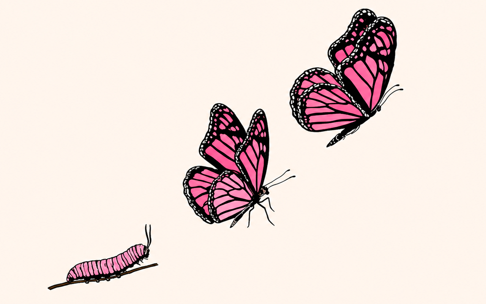
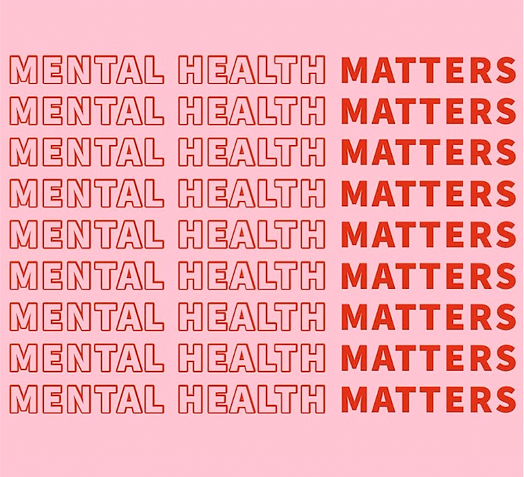
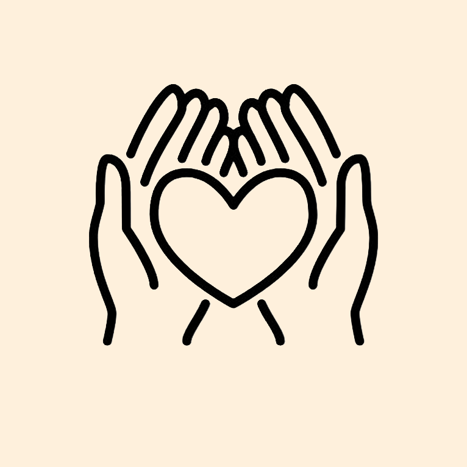

Velkommen til min blog!

Du er ikke alene. Mange andre står i den samme situation som du gør lige nu, men vi tør bare ikke at tale om det.
Her har jeg samlet alt det, der har hjulpet mig igennem sværre tider. Jeg håber også at du kan få glæde af det!
Siden er til dig, der kæmper med mentale udfordringer, er pårørende eller bare nysgerrig på emnet.
Udviklingen fra larve til sommerfugl, minder os om at forandringer tager tid, men det er værd at kæmpe for.
Står du og har akut brug for hjælp så tag fat i en af følgende.
Ved akut-hjælp ring 1-1-2
Seneste blogindlæg

Hvad er mental sundhed?
Dette blogindlæg handler om hvad mental sundhed egentlig er og om hvordan kommer man igennem de svære perioder.

Mine bedste anbefalinger
Dette blogindlæg handler om hvilke bøger, podcast og dokumentarer som jeg selv har haft meget glæde af.

Lær mig bedre at kende!
Jeg hedder Mie og er 25 år gammel. Jeg har selv haft psykiske udfordringer i størstedelen af mit liv. Jeg har lavet denne blog for at samle alle informationer og hjælp som jeg selv har manglet, da jeg havde store mentale udfordringer. De går ikke nødvendigvis væk, men man kan lære at håndtere svære udfordinger. Og vigtigst af alt skal du huske at det hele nok skal gå.